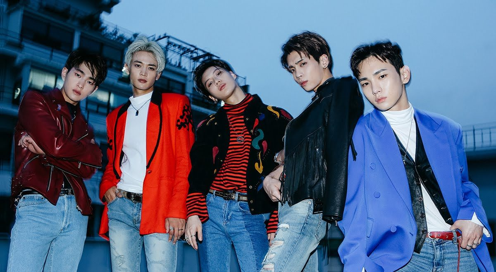

Historia

La boyband surcoreana SHINee debutó el 25 de mayo de 2008 bajo la empresa SM Entertainment, consolidándose rápidamente como uno de los grupos más influyentes dentro del K-pop de segunda generación. Integrada originalmente por Onew, Jonghyun, Key, Minho y Taemin, la agrupación llamó la atención desde sus inicios por su concepto juvenil y sofisticado, así como por su propuesta musical fresca. Su sencillo debut, Replay, destacó por su sonido R&B contemporáneo y una imagen estilizada que marcó tendencia entre el público adolescente, posicionándolos rápidamente como “ídolos contemporáneos”, un término con el que la propia agencia los promovía.A lo largo de su trayectoria, SHINee se caracterizó por su constante experimentación sonora y visual. Lejos de mantenerse en una sola línea musical, el grupo exploró géneros como el R&B, electropop, dance, funk y house, consolidando un estilo versátil y arriesgado dentro de la industria. Su primer álbum de estudio, The SHINee World, reforzó su popularidad inicial, mientras que producciones posteriores como Lucifer y Odd evidenciaron una evolución artística más madura, tanto en sonido como en concepto visual. En particular, “Lucifer” se convirtió en un referente por su compleja coreografía y estética futurista, influyendo en tendencias de moda y performance dentro del K-pop.
Además de su éxito en Corea del Sur, el grupo expandió su presencia al mercado japonés con lanzamientos en ese idioma y giras internacionales, contribuyendo activamente a la expansión global de la llamada Hallyu (ola coreana). Su capacidad vocal —especialmente reconocida en presentaciones en vivo— y la precisión de sus coreografías los posicionaron como uno de los grupos con mejor desempeño escénico de su generación. Cada integrante también desarrolló carreras individuales en música, actuación, moda y televisión, fortaleciendo aún más la marca del grupo.
En diciembre de 2017, SHINee atravesó uno de los momentos más difíciles de su historia tras el fallecimiento de Jonghyun, vocalista principal y uno de los compositores más destacados del grupo. Este suceso impactó profundamente tanto a la industria como a sus seguidores a nivel mundial. Sin embargo, tras un periodo de pausa y reflexión, el grupo decidió continuar como cuarteto, lanzando nueva música y realizando presentaciones que rindieron homenaje a su compañero, demostrando fortaleza y compromiso con su legado artístico.
Con más de una década de trayectoria, SHINee ha dejado una huella significativa en la industria musical. Su constante reinvención, la calidad de sus producciones y su influencia en moda, coreografía y estilo conceptual los han consolidado como uno de los grupos más respetados y queridos del K-pop. Más allá de los éxitos comerciales, su historia representa un ejemplo de evolución, resiliencia y permanencia dentro de una industria caracterizada por cambios rápidos y alta competitividad.